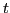
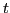
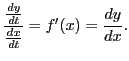
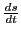
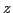

Let
be the equation of a curve generated by a moving point P.
Its coordinates  and
and  may then be considered as functions
of the time, as explained in §6.13. Differentiating with respect to , by the chain rule
(Formula XXV in §5.1), we have
may then be considered as functions
of the time, as explained in §6.13. Differentiating with respect to , by the chain rule
(Formula XXV in §5.1), we have
At any instant the time rate of change of (or the function)
equals its derivative multiplied by the time rate change of the
independent variable.
Or, write (10.1) in the form

The derivative measures the ratio of the time rate of
change of to that of .
Figure 10.1:
Geometric visualization of the derivative the arc length.
|
 being the time rate of change of length
of arc, we have from (6.26),
which is the relation indicated by Figure 10.1.
As a guide in solving rate problems use the following rule:
- FIRST STEP. Draw a figure illustrating the problem.
Denote by , , , etc., the quantities which vary with the time.
- SECOND STEP. Obtain a relation between the variables
involved which will hold true at any instant.
- THIRD STEP. Differentiate with respect to the time.
- FOURTH STEP. Make a list of the given and required quantities.
- FIFTH STEP. Substitute the known quantities in the result
found by differentiating (third step), and solve for the unknown.
david joyner
2008-08-11